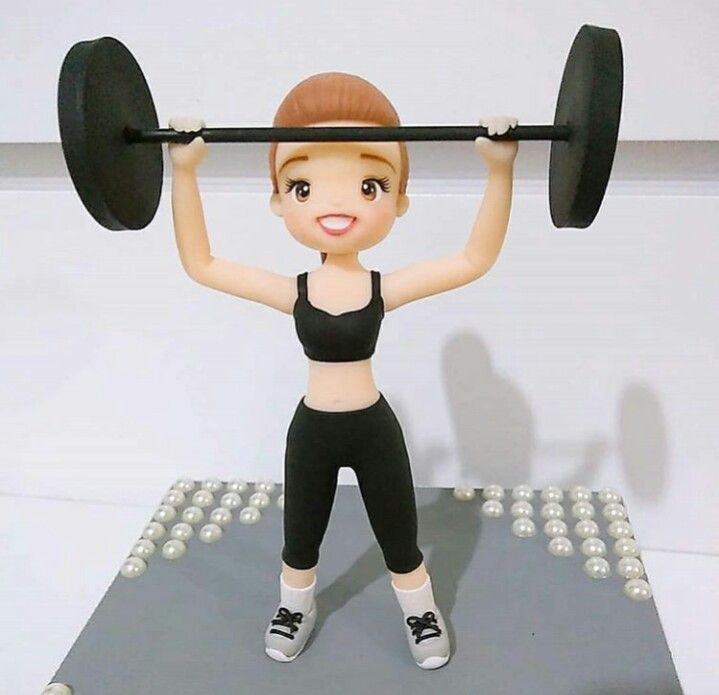
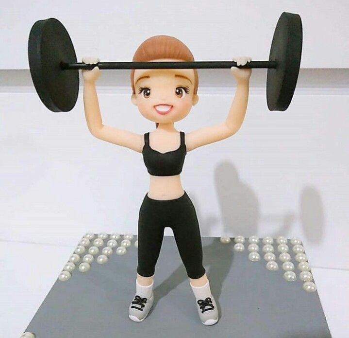
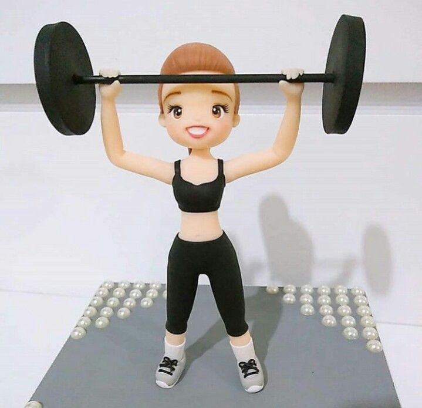

Pessoais:
Após o exercício, é importante fazer alongamentos, hidratar-se e descansar para evitar lesões e garantir uma recuperação adequada.
 

O aquecimento é essencial para preparar o corpo para a atividade física, aumentando a circulação sanguínea e a flexibilidade.
Escolha um exercício que você goste e que se adeque ao seu nível de condicionamento físico. Pode ser corrida, musculação, yoga, entre outros.
Após o exercício, é importante fazer alongamentos, hidratar-se e descansar para evitar lesões e garantir uma recuperação adequada.
